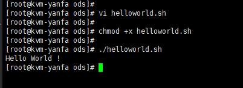
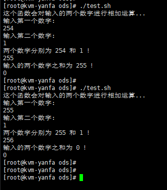

一、Shell简介
Shell 是一个用 C 语言编写的程序，它是用户使用 Linux 的桥梁。Shell 既是一种命令语言，又是一种程序设计语言。
Shell 是指一种应用程序，这个应用程序提供了一个界面，用户通过这个界面访问操作系统内核的服务。
Ken Thompson 的 sh 是第一种 Unix Shell，Windows Explorer 是一个典型的图形界面 Shell。
业界所说的 shell 通常都是指 shell 脚本，但读者朋友要知道，shell 和 shell script 是两个不同的概念。
Shell 脚本（shell script），是一种为 shell 编写的脚本程序，一般文件后缀为 .sh。
二、Shell环境
Shell 编程跟 JavaScript 编程一样，只要有一个能编写代码的文本编辑器和一个能解释执行的脚本解释器就可以了。
Linux 的 Shell 种类众多，常见的有：
- Bourne Shell（
/usr/bin/sh或/bin/sh）是 Unix 标准默认的 shell。 - Bourne Again Shell（
/bin/bash） 是 Linux 标准默认的 shell。 - C Shell（
/usr/bin/csh） - K Shell（
/usr/bin/ksh） - Shell for Root（
/sbin/sh）
三、Hello World
脚本的第一行一般是这样的：#!/bin/bash。#! 是一个约定的标记，它告诉系统这个脚本需要什么解释器来执行，即使用哪一种 Shell。
写个hello world 入门，vi helloworld.sh 新建一个文件，编辑如下内容：
|
保存退出后，给文件执行权限和执行，命令如下：
// 给helloworld.sh文件添加可执行权限 |
echo 命令用于向窗口输出文本。
结果打印：Hello World !

写出HelloWorld，就入门了，把你在终端敲的命令写到脚本里面来执行，最终结果都是一致的。
接下来就可以写复杂的脚本了。要写复杂的脚本，首先得知道语法。
四、常用语法
下面列出常用的语法，或者我使用过的。
1、注释
注释，可以说明你这段代码的作用，防止忘记或者让别人更加精彩你写的代码。
- 单行注释 - 以
#开头，到行尾结束。 - 多行注释 - 以
:<<EOF开头，到EOF结束。# 这个是单行注释
:<<EOF
这里的内容都是注释的内容，不执行。
这个是多行注释，在这里的代码都不执行。
EOF
2、echo
上面Hello World的例子用过，就是在屏幕中打印一个字符串的。
|
3、变量
Bash 中没有数据类型，bash 中的变量可以保存一个数字、一个字符、一个字符串等等。同时无需提前声明变量，给变量赋值会直接创建变量。
变量命名规则：
注意，变量名和等号之间不能有空格，这可能和你熟悉的所有编程语言都不一样。同时，变量名的命名须遵循如下规则：
- 命名只能使用英文字母，数字和下划线，首个字符不能以数字开头。
- 中间不能有空格，可以使用下划线（
_）。 - 不能使用标点符号。
- 不能使用bash里的关键字（可用help命令查看保留关键字）。
使用变量：
使用一个定义过的变量，只要在变量名前面加美元符号即可，如下：
# 这个就是我定义的变量，值为rstyro |
变量类型：
- 局部变量
局部变量在脚本或命令中定义，仅在当前shell实例中有效，其他shell启动的程序不能访问局部变量。 - 环境变量
所有的程序，包括shell启动的程序，都能访问环境变量，有些程序需要环境变量来保证其正常运行。必要的时候shell脚本也可以定义环境变量。 - shell变量
shell变量是由shell程序设置的特殊变量。shell变量中有一部分是环境变量，有一部分是局部变量，这些变量保证了shell的正常运行
4、printf
Shell 的另一个输出命令 printf，printf 命令模仿 C 程序库（library）里的 printf() 程序。
printf 由 POSIX 标准所定义，因此使用 printf 的脚本比使用 echo 移植性好。
printf 使用引用文本或空格分隔的参数，外面可以在 printf 中使用格式化字符串，还可以制定字符串的宽度、左右对齐方式等。
默认 printf 不会像 echo 自动添加换行符，我们可以手动添加 \n。
语法：
# format-string: 为格式控制字符串，arguments: 为参数列表 |
实例：
|
执行脚本输出：
姓名 性别 体重kg |
参数解析：
- %s %c %d %f
都是格式替代符，％s输出一个字符串，％d整型输出，％c输出一个字符，％f输出实数，以小数形式输出。 - %-10s
指一个宽度为 10 个字符（-表示左对齐，没有则表示右对齐），任何字符都会被显示在 10 个字符宽的字符内，如果不足则自动以空格填充，超过也会将内容全部显示出来。 - %-4.2f
指格式化为小数，其中.2指保留2位小数。
5、字符串
字符串是shell编程中最常用最有用的数据类型，字符串可以用单引号，也可以用双引号，也可以不用引号。
单引号字符串的限制：
- 单引号里的任何字符都会原样输出，单引号字符串中的变量是无效的；
- 单引号字串中不能出现单独一个的单引号（对单引号使用转义符后也不行），但可成对出现，作为字符串拼接使用。
双引号的优点：
- 双引号里可以有变量
- 双引号里可以出现转义字符
字符串拼接
|
如上输出如下：
hello, rstyro ! hello, rstyro ! |
字符串方法
|
6、数组
bash支持一维数组（不支持多维数组），并且没有限定数组的大小。
类似于 C 语言，数组元素的下标由 0 开始编号。获取数组中的元素要利用下标，下标可以是整数或算术表达式，其值应大于或等于 0
在 Shell 中，用括号来表示数组，数组元素用”空格”符号分割开。定义数组的一般形式为：
定义数组：
|
操作数组：
获取数组和操作如下：
# 打印array_name1 索引为1 的元素 |
输出：
value1 |
7、test
- test 是 Shell 内置命令，用来检测某个条件是否成立。
- test 通常和 if 语句一起使用，并且大部分 if 语句都依赖 test
- 它可以进行数值、字符和文件三个方面的测试
- test 命令也可以简写为
[]，它的用法为:[ expression(表达式) ] - 注意
[]和expression之间的空格，这两个空格是必须的，否则会导致语法错误。[]的写法更加简洁，比 test 使用频率高.
|
exit
- exit 是一个 Shell 内置命令，用来退出当前 Shell 进程，并返回一个退出状态；
- 使用
$?可以接收这个退出状态。 - exit 命令可以接受一个整数值作为参数，代表退出状态。如果不指定，默认状态值是 0
- exit 退出状态只能是一个介于 0~255 之间的整数，其中只有 0 表示成功，其它值都表示失败
编写下面的脚本，并命名为 test.sh：
|
执行结果：
[root@kvm-yanfa ods] |
五、流程控制
流程控制指令是指会改变程序运行顺序的指令，可能是运行不同位置的指令，或是在二段（或多段）程序中选择一个运行。
1、if判断
if判断条件是否满足，满足则执行，语法格式如下：
# 第一种格式：如果else分支没有语句执行，就不要写这个else。 |
实例：
|
- 条件表达式要放在方括号之间，并且要有空格
2、while
- while 循环是 Shell 脚本中最简单的一种循环，当条件满足时，while 重复地执行一组语句，当条件不满足时，就退出 while 循环。
- 格式如下：
while condition
do
command
done
例子：
|
无限循环
|
3、until
unti 循环和 while 循环恰好相反，当判断条件不成立时才进行循环，一旦判断条件成立，就终止循环。
|
4、for循环、
for循环格式如下：
for var in item1 item2 ... itemN |
实例：
|
或者上面的加法例子：
|
- 格式：for(( 初始化语句; 判断条件; 自增或自减 ))
- for 循环中的 exp1（初始化语句）、exp2（判断条件）和 exp3（自增或自减）都是可选项，都可以省略（但分号;必须保留）
5、break与continue
在循环过程中，有时候需要在未达到循环结束条件时强制跳出循环，Shell使用两个命令来实现该功能：break和continue。
实例：
|
- 如上，输入大于0的数，就一直可以输入，输入小于0提示继续输入，输入0或字符则退出
- break命令允许跳出所有循环（终止执行后面的所有循环）
- continue 用来结束本次循环，直接跳到下一次循环，如果循环条件成立，还会继续循环。
6、case in
Shell case语句为多选择语句。可以用case语句匹配一个值与一个模式，如果匹配成功，执行相匹配的命令。case语句格式如下：
case 值 in |
实例：
|
- case工作方式如上所示。取值后面必须为单词in，每一模式必须以右括号结束
- 取值可以为变量或常数。匹配发现取值符合某一模式后，其间所有命令开始执行直至
;; - 如果无一匹配模式，使用星号 * 捕获该值，再执行后面的命令。
- 每个 case 分支用右圆括号开始，用两个分号 ;; 表示 break，esac（就是 case 反过来）作为结束标记。
六、运算符
1、关系运算符
实例：
|
- 关系运算符只支持数字，不支持字符串，除非字符串的值是数字。
2、布尔运算符
实例：
|
3、逻辑运算符
实例：
|
- 注意使用逻辑运算符要两个方括号
4、字符串运算符
|
5、文件测试运算符
文件测试运算符用于检测 Unix 文件的各种属性。
属性如下：
| 操作符 | 说明 | 举例 |
|---|---|---|
-b file |
检测文件是否是块设备文件，如果是，则返回 true。 | [ -b $file ] 返回 false。 |
-c file |
检测文件是否是字符设备文件，如果是，则返回 true。 | [ -c $file ] 返回 false。 |
-d file |
检测文件是否是目录，如果是，则返回 true。 | [ -d $file ] 返回 false。 |
-f file |
检测文件是否是普通文件（既不是目录，也不是设备文件），如果是，则返回 true。 | [ -f $file ] 返回 true。 |
-g file |
检测文件是否设置了 SGID 位，如果是，则返回 true。 | [ -g $file ] 返回 false。 |
-k file |
检测文件是否设置了粘着位(Sticky Bit)，如果是，则返回 true。 | [ -k $file ] 返回 false。 |
-p file |
检测文件是否是有名管道，如果是，则返回 true。 | [ -p $file ] 返回 false。 |
-u file |
检测文件是否设置了 SUID 位，如果是，则返回 true。 | [ -u $file ] 返回 false。 |
-r file |
检测文件是否可读，如果是，则返回 true。 | [ -r $file ] 返回 true。 |
-w file |
检测文件是否可写，如果是，则返回 true。 | [ -w $file ] 返回 true。 |
-x file |
检测文件是否可执行，如果是，则返回 true。 | [ -x $file ] 返回 true。 |
-s file |
检测文件是否为空（文件大小是否大于0），不为空返回 true。 | [ -s $file ] 返回 true。 |
-e file |
检测文件（包括目录）是否存在，如果是，则返回 true。 | [ -e $file ] 返回 true。 |
实例：
|
七、shell传递参数
- 运行 Shell 脚本文件时我们可以给它传递一些参数，这些参数在脚本文件内部可以使用
$n的形式来接收。 - 例如，
$1表示第一个参数，$2表示第二个参数，依次类推。 - 除了
$n，Shell 中还有$#、$*、$@、$?、$$几个特殊参数
实例：
|
为脚本设置可执行权限，并执行脚本，输出结果如下所示：
$ chmod +x test.sh |
特殊字符参数与含义:
| 变量 | 含义 |
|---|---|
| $0 | 当前脚本的文件名。 |
| $n | （n≥1） 传递给脚本或函数的参数。n 是一个数字，表示第几个参数。例如，第一个参数是 $1，第二个参数是 $2。 |
| $# | 传递给脚本或函数的参数个数。 |
| $* | 以一个单字符串显示所有向脚本传递的参数。如”$*”用「”」括起来的情况、以”$1 $2 … $n”的形式输出所有参数。 |
| $@ | 与$*相同，但是使用时加引号，并在引号中返回每个参数。如”$@”用「”」括起来的情况、以”$1” “$2” … “$n” 的形式输出所有参数。 |
| $? | 显示最后命令的退出状态。0表示没有错误，其他任何值表明有错误 |
| $$ | 当前 Shell 进程 ID。对于 Shell 脚本，就是这些脚本所在的进程 ID。 |
| $! | 后台运行的最后一个进程的ID号 |
$* 与 $@ 区别：
- 相同点：都是引用所有参数。
- 不同点：只有在双引号中体现出来。假设在脚本运行时写了三个参数 1、2、3，，则 “ * “ 等价于 “1 2 3”（传递了一个参数），而 “@” 等价于 “1” “2” “3”（传递了三个参数）。
八、函数
函数的本质是一段可以重复使用的脚本代码，这段代码被提前编写好了，放在了指定的位置，使用时直接调取即可。
函数的格式：
function methodName() { |
- function是 Shell 中的关键字，专门用来定义函数；
- methodName 是函数名；
- 由
{ }包围的部分称为函数体，调用一个函数，实际上就是执行函数体中的代码。 - return value表示函数的返回值，其中 return 是 Shell 关键字，专门用在函数中返回一个值；这一部分可以写也可以不写。如果不写，将以最后一条命令运行结果，作为返回值
- 如果你嫌麻烦，函数定义时也可以不写 function 关键字
实例一：
|
- 所有函数在使用前必须定义。这意味着必须将函数放在脚本开始部分，直至shell解释器首次发现它时，才可以使用。调用函数仅使用其函数名即可
- 函数返回值在调用该函数后通过 $? 来获得
实例二：
|
执行结果如下：

- 发现
$?最大能接收的值是：255，刚好是一个byte类型。 - 连续使用两次
echo $?，得到的结果不同。第一次$?是add 函数的返回值，第二次就是echo "输入的两个数字之和为 $? !"的返回值了。
实例三：
- 方法带参数的调用方式
|
九、多线程用法
shell也是有多线程用法的，先看例子：
1、串行例子
|
- 上面的例子很简单，每隔1秒输出1到10的数，最后打印总耗时
- seq：是squeue一个序列的缩写，
seq 1 10是输出1到10的整数 - 结果耗时是：
10s,可以知道执行结果是串行的。符合逻辑 - 现在来试试多线程的写法，需要用到
& wait。
2、并行例子
|
- 多条命令用
{}括起来然后在使用& - 然后在for后面使用
wait等待所以子进程执行结束。 - 最终offset_time打印为：
offset_time=1s所以它们是并行执行的。
十、常用的脚本命令
记录一下吧
1、获取本机IP地址
# 方式一 |
2、获取Java进程PID进程
pid=`ps -ef | grep yourJavaServiceName.jar |grep -v color |grep -v grep | awk '{print $2}'` |
3、多线程扫描相同网段ip
|
& 与 wait结合使用就相当于多线程。&是后台执行（新建子进程）的意思wait等待所有子进程结束继续往下执行。
4、通过mac地址获取ip
|
- 执行脚本的参数就是mac地址，例：
./macToIp.sh 52:54:00:b0:4f:13这样执行即可。 - 这个可以先通过扫描同网段的ip，然后在查
- 类似这个
cat /proc/net/arp | grep 52:54:00:b0:4f:13，但是arp有时会有多条（缓存）
5、其他
# 获取脚本执行的当前路径 |
参考链接：